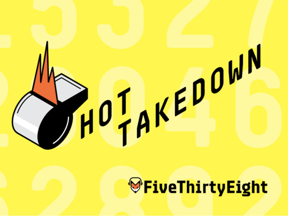

New York City-based podcast producer, pop culture enthusiast, and great listener.

Odd Lots
Producer
The Odd Lots podcast delves into unexpected aspects of markets and finance. Can Buddhism save the global economy? How do negotiators determine the market value for ransom payments? What advice does one of the most successful professional pokers player have for traders? Odd Lots asks these questions and more.
image from bloomberg.com
Suggested episodes:
Deal of the Week
Producer
Members of Bloomberg's Deals team analyze the biggest "deal of the week" and how it fits into larger trends in mergers & acquisitions on the Deal of the Week podcast. Journalists responsible for breaking some of Bloomberg's biggest scoops give listeners an inside look at what happens when the world's most powerful companies decide to go into M&A.
image from bloomberg.com
Suggested episodes:
Benchmark
Producer
Bloomberg journalists from around the world come together for a jargon-free discussion on the stories that are driving the global economy on the Benchmark podcast.
image from bloomberg.com
Suggested episodes:
What's The Point?
Podcast & Video Intern
The What's The Point? podcast delves into the stories driving our age of data. From choosing what movie to see on Friday night to tracing your family tree to picking what football team to root for, data can factor into our daily lives in many different ways.
image from fivethirtyeight.com
Hot Takedown
Podcast & Video Intern
FiveThirtyEight's Hot Takedown podcast measures the emerging narratives of the sports world and the hot takes from commentators and Monday morning quarterbacks against actual data in search of more solid evidence to lean on.
image from fivethirtyeight.com
 @sarapatt
@sarapatt
 patterson.e.sara@gmail.com
patterson.e.sara@gmail.com